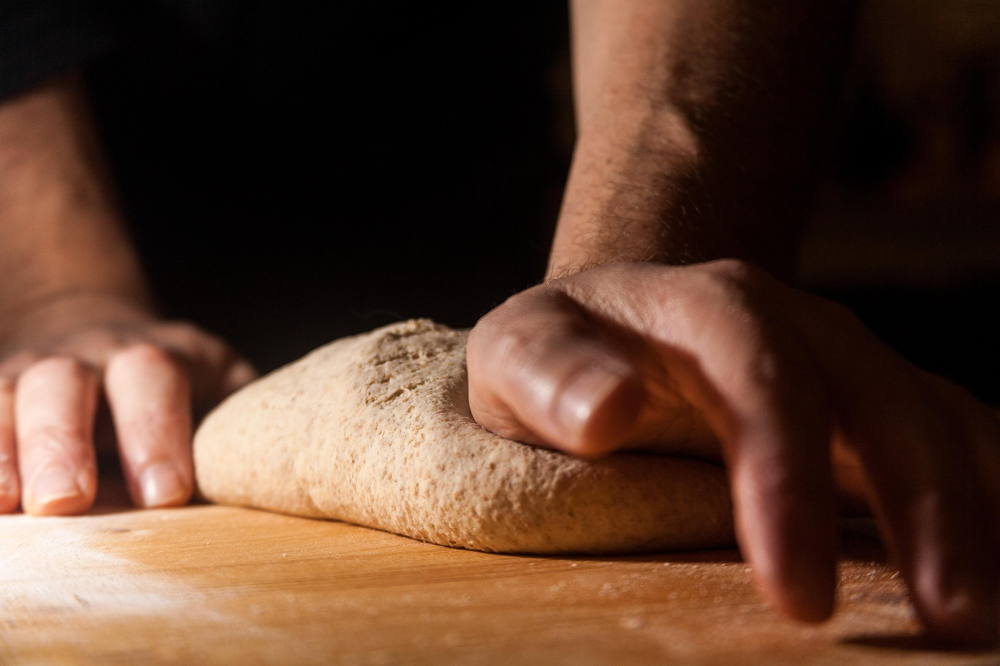

<section
	id="sobre-nosotros"
	class="about"
	aria-labelledby="about-heading"
>
	<div class="about__container">
		<div class="about__image-col">
			<div class="about__image-wrapper">
				
			</div>
		</div>
		<div class="about__text-col">
			<div class="section-label">Sobre nosotros</div>
			<h2
				class="section-title"
				id="about-heading"
			>
				Cocinar es un acto de amor
			</h2>
			<p class="about__text">
				En <strong>Sabor y Tradición</strong> creemos que cada plato cuenta una historia. Desde
				2018, compartimos recetas que honran la cocina de nuestras abuelas y abrazan la innovación
				culinaria contemporánea.
			</p>
			<p class="about__text">
				Nuestro compromiso es con los ingredientes de proximidad, las técnicas artesanales y la
				pasión por una gastronomía sostenible y accesible para todos.
			</p>

			<ul
				class="about__stats"
				role="list"
			>
				<li class="about__stat">
					<span
						class="about__stat-number"
						aria-hidden="true"
					>
						350+
					</span>
					<span class="about__stat-label"> Recetas publicadas </span>
				</li>

				<li class="about__stat">
					<span
						class="about__stat-number"
						aria-hidden="true"
					>
						50k
					</span>
					<span class="about__stat-label"> Lectores mensuales </span>
				</li>

				<li class="about__stat">
					<span
						class="about__stat-number"
						aria-hidden="true"
					>
						7
					</span>
					<span class="about__stat-label"> Años de experiencia </span>
				</li>
			</ul>
		</div>
	</div>
</section>
